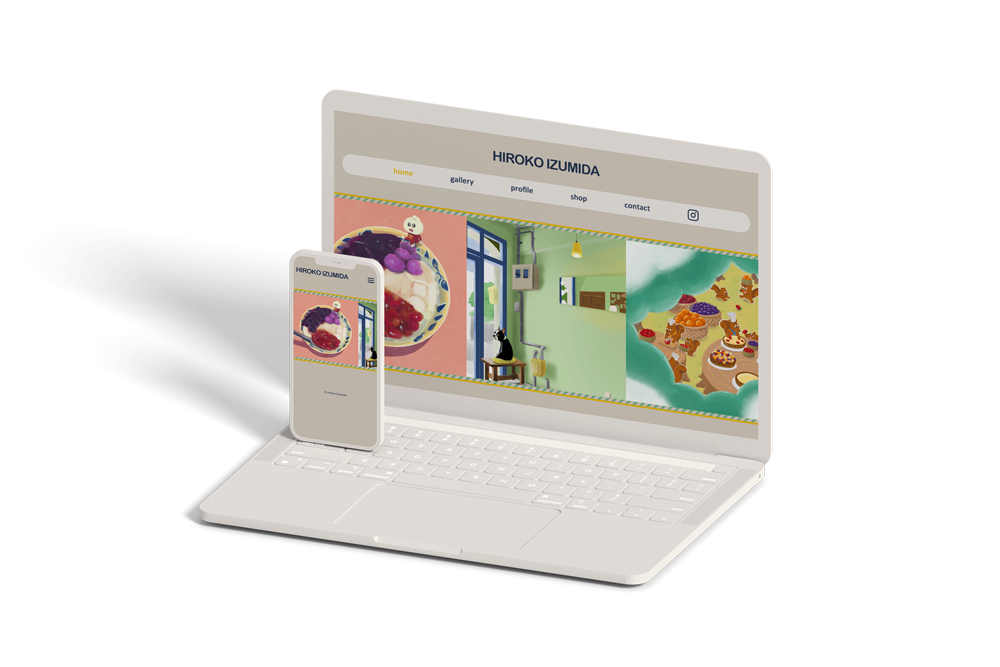

イラストレーターのポートフォリオサイト
＠ 職業訓練 個人制作
デザイン
コーディング
制作時間
- デザインカンプ作成：5時間
- コーディング：15時間
使用ツール
- Photoshop − デザインカンプ作成
- Illustrator − ロゴ作成
- Dreamweaver − コーディング
制作の経緯
職業訓練の個人制作課題として作成。
イラストやGIFアニメーションを趣味で制作している妹が、個人でイラストやアニメーションの仕事を受けるための手助けになればと思い、ポートフォリオサイトを制作しました。
サイトの目的
- イラストおよびアニメーション制作に関する問い合わせを増やす
- イラストレーター・アニメーターとしての認知度アップ
- 制作実績を掲載することで信頼度アップ
使用ツール
- Photoshop − デザインカンプの作成
- Illustrator − ロゴの作成
- Dreamweaver − コーディング
- FFFTP − 訓練校サーバーへのアップロード
意識した点
掲載作品を主役としたシンプルかつポップなデザイン
ポートフォリオサイト最大の目的は作品の良さを知ってもらい、お仕事を依頼したいと思ってもらうことにあるので、作品を引き立たせるシンプルなデザインにしました。
その上で、作品のテイストにマッチするような、優しくポップな雰囲気を色合いと丸みのあるパーツで表現しました。
トップページ・メインビジュアルのスライダーには、ファーストビューで作品の雰囲気を感じてもらい、興味を持ってもらう狙いがあります。
目的地まで迷わず到達できるサイト設計
各ページに画面幅いっぱいのナビゲーションを配置し、１コンテンツ１ページにすることで、迷わず直感的に目的のページまでたどり着ける、ストレスを感じさせないサイト設計にしました。
今後の課題
複数ページで重複するhtmlの部品について
ヘッダーとフッターのような、複数ページにまたがって重複する共通のhtml部品があることが気になるので、このような共通部品を１つのファイルに切り出す手法を次の制作から取り入れるつもりです。
お問い合わせフォームの実装
Webアプリケーションの実装についてはまだ知識が浅く、現時点ではお問い合わせフォームにメール送信機能を付けられていないので、PHPを使って実装することを次の目標にしています。